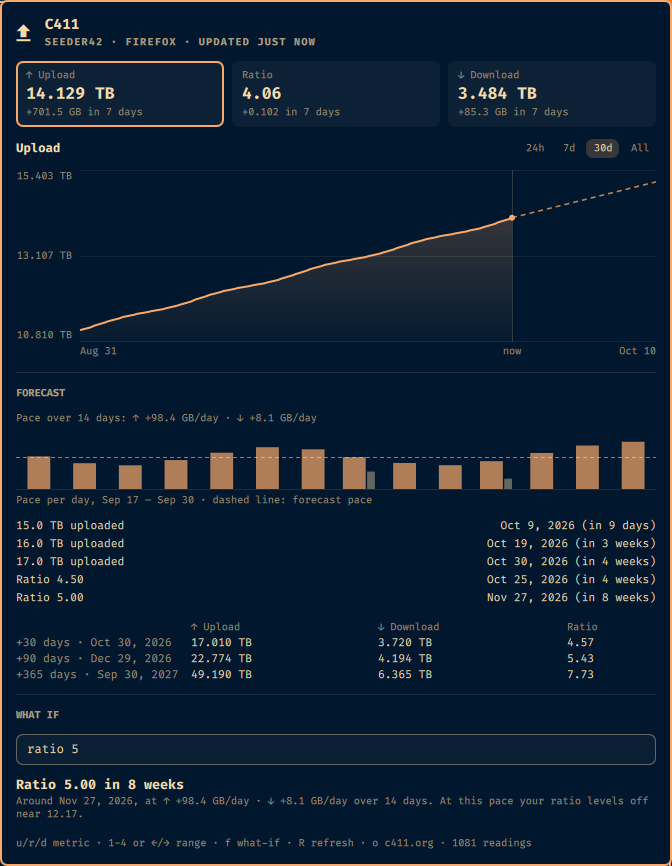
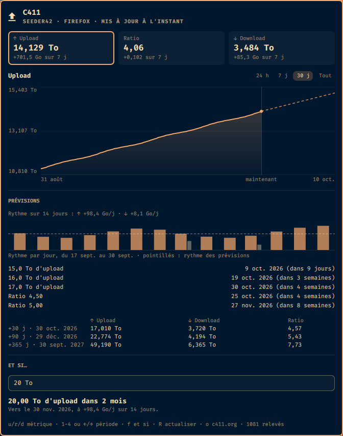
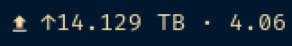

C411 Trend records your upload, download and ratio, charts them, and tells you when you will hit the next milestone at your current pace. Ask it about your own goals: "20 TB uploaded in 2 months", "ratio 5.00 in 8 weeks".
C411 Trend relève ton upload, ton download et ton ratio, en trace les courbes et te dit quand tu atteindras le prochain palier à ton rythme actuel. Interroge-le sur tes propres objectifs : « 20 To d'upload dans 2 mois », « ratio 5,00 dans 8 semaines ».
omarchy plugin add https://github.com/XNinety9/c411trend.git --enable


A pill in the bar, a panel when you click it. No browser tab, no spreadsheet.
Une pastille dans la barre, un panneau quand tu cliques dessus. Pas d'onglet, pas de tableur.
Upload, ratio and download tiles with their change over 7 days, and a chart over 24 h, 7 days, 30 days or everything, the trend dashed past "now".
Cases upload, ratio et download avec leur évolution sur 7 jours, et une courbe sur 24 h, 7 j, 30 j ou tout l'historique, la tendance en pointillés après « maintenant ».
Next round figures with their date, your own goals, projections at 30, 90 and 365 days. The ratio is derived from both paces, so it knows when a goal is out of reach.
Prochains paliers ronds avec leur date, tes objectifs, projections à 30, 90 et 365 jours. Le ratio est déduit des deux rythmes : il sait quand un objectif est hors d'atteinte.
A bar per day, upload and download, with the forecast pace dashed across. Spot a slowing torrent before the average does. Hover a day for its figures.
Une barre par jour, upload et download, avec le rythme des prévisions en pointillés. Repère un torrent qui ralentit avant que la moyenne ne le montre. Survole un jour pour ses chiffres.
Type "20 TB", "ratio 5" or just "5" and read when you get there, at what pace, or why not.
Tape « 20 To », « ratio 5 » ou juste « 5 » et lis quand tu y arriveras, à quel rythme, ou pourquoi pas.
Compose the pill from 20 values: totals, pace, gains over 24 h / 7 / 30 days, time to your goals.
Compose la pastille à partir de 20 valeurs : totaux, rythme, gains sur 24 h / 7 / 30 j, temps jusqu'à tes objectifs.
Follows your session locale or your choice, switches live. French uses the tracker's units: 14,129 To, +98,4 Go/j.
Suit la langue de ta session ou ton choix, bascule en direct. En français, les unités du tracker : 14,129 To, +98,4 Go/j.
The what-if field answers as you type, at the pace of the last 14 days:
Le champ « et si » répond pendant que tu tapes, au rythme des 14 derniers jours :
20 TB, 850 GB, 1.5 To: an upload amount;ratio 3.5, r 5, 5x: a ratio;5: could be either, so you get both answers;20 To, 850 Go, 1,5 TB : un volume d'upload ;ratio 3,5, r 5, 5x : un ratio ;5 : peut vouloir dire les deux, tu as donc les deux réponses ;Also from a terminal: omarchy-shell x99.c411trend when "20 TB".
Aussi depuis un terminal : omarchy-shell x99.c411trend when "20 To".
The text next to the icon is a template: mix values with your own separators. {{ and }} print braces, and an unknown key stays visible so typos show.
Le texte à côté de l'icône est un modèle : mélange les valeurs avec tes propres séparateurs. {{ et }} affichent des accolades, et une clé inconnue reste visible pour qu'une faute de frappe se voie.

Totals {up} {down} {ratio} {credit} {buffer} · pace {rate} {downrate} · gains {up24h} {up7d} {ratio7d}… · goals {next} {nexteta} {goal} {ratiogoal} · {user}.
Totaux {up} {down} {ratio} {credit} {buffer} · rythme {rate} {downrate} · gains {up24h} {up7d} {ratio7d}… · objectifs {next} {nexteta} {goal} {ratiogoal} · {user}.
Same widget, two languages, switched live from the settings. Dates, decimals and units follow.
Le même widget en deux langues, qui bascule en direct depuis les réglages. Dates, décimales et unités suivent.
+98.4 GB/day · Nov 30, 2026+98,4 Go/j · 30 nov. 2026Be logged in to c411.org in your browser. In Auto mode the widget tries the store that worked last time, your default browser, then every other one until a live session turns up.
Sois connecté à c411.org dans ton navigateur. En mode Auto, le widget essaie le magasin qui a marché la dernière fois, ton navigateur par défaut, puis tous les autres jusqu'à trouver une session valide.
| FamilyFamille | BrowsersNavigateurs | WhereOù |
|---|---|---|
| Chromium | Brave, Chrome, Chromium, Edge, Vivaldi, Opera, Thorium | native, Flatpak, Snapnatif, Flatpak, Snap |
| Firefox | Firefox, Zen, LibreWolf, Floorp, Waterfox | native, Flatpak, Snap, ~/.config/mozillanatif, Flatpak, Snap, ~/.config/mozilla |
| ManualManuel | anytous | File: paste the Cookie header into ~/.config/c411trend/cookieFile : colle l'en-tête Cookie dans ~/.config/c411trend/cookie |
Reading a session cookie is sensitive, so it is done narrowly and documented in full in SECURITY.md.
Lire un cookie de session est sensible : c'est fait au plus juste, et tout est documenté dans SECURITY.md (en anglais).
https://c411.org/api/auth/me.~/.curlrc is ignored so no trace can leak it.File mode takes a pasted cookie instead.https://c411.org/api/auth/me.~/.curlrc est ignoré pour qu'aucune trace ne le divulgue.File prend un cookie collé à la main.omarchy plugin add https://github.com/XNinety9/c411trend.git --enable
Chromium browsers also need secret-tool (in Omarchy's base) and the python-cryptography package; Firefox browsers need neither.
Les navigateurs Chromium demandent aussi secret-tool (dans la base d'Omarchy) et le paquet python-cryptography ; les navigateurs Firefox n'ont besoin de rien.
First forecasts after an hour of readings. To remove it: omarchy plugin remove x99.c411trend.
Premières prévisions après une heure de relevés. Pour l'enlever : omarchy plugin remove x99.c411trend.